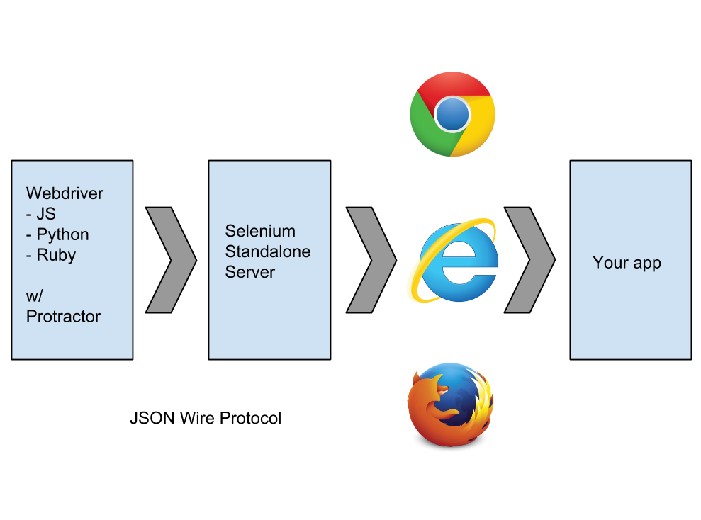

Hi there.
We are...
We have 40 min to cover full spectrum testing
YAY...
Unfortunately there's too much to cover. :(
But we can inspire you! :)
How do you like testing?
Why people don't test
- Takes too long (environment setup etc.)
- Missing expertise (how to test? Which tools to use?)
- works-for-me™ (and without tests)
- ...
Why people should test
- Verifies that system meets requirements (functional, performance, security etc.)
- Improves quality (code and product)
- Helps to *not* deploy bugs
- Makes debugging easier
- ...
So what do we cover today?
We inspire you with these
Unit Testing
- Karma Testrunner
- Jasmine as a DSL
- Sample test code
E2E Testing
- Protractor
- PageObjects
- Debugging
So next time you deploy an app, you don't feel like this...
But rather like this...
Ready to visit the land of milk and honey?
Let's go!
Unit Testing
What?
- Isolate individual units of code under test
- a.k.a. instantiate the unit standalone, without the rest of the system
- Uses mocking strategies: providing a fake object or method for the target code to interact with
Why?
- Measurable proof that your code is correct
- Safer refactoring
- Reliable components
- Write better code: reusable, loosely coupled and maintainable
- Sleep better at night
When?
Before or while the 'units' are being developed.
Tools
Karma is a test runner, that makes automated testing simpler and faster ...
Pre-Karma Solutions
- Selenium | WebDriver / Selenium 2: suitable for e2e
- Testing frameworks (Jasmine, QUnit): HTML runners
- JsTestDriver: slow and unreliable
Goals
- Testing on real browsers
- Remote control
- Speed
- Integration with IDEs and text editors
- Integration with CI servers
- Extensibility
- Debugging
Design
Client-server architecture with a bi-directional communication channel between the client and the server

The server is the master part of the system and runs on Node.js on the local machine.
- Watching files
- Communication with captured clients
- Reporting test results to the developer
- Serving all the client code
The client is the place where all the tests are actually executed.
- Typically a web browser, a computer, TV, tablet, etc.
- Runs on the same machine as the server or anything that has HTTP access to the server
- Communicates with the server through socket.io
- Executes the tests in an iframe
Demo
Configuration
module.exports = function(config) {
config.set({
basePath: '../..',
files: [
'app/scripts/**/*.js',
'test/unit/*.spec.js'
],
exclude: [],
port: 1234,
frameworks: ['jasmine'],
autoWatch: true,
browsers: ['Chrome', 'Safari', 'Firefox']
});
};

behavior-driven development framework for testing JavaScript code
suites, specs and expectations
describe("A suite", function() {
it("contains spec with an expectation", function() {
expect(true).toBe(true);
});
});
ngMock
Provides some useful mocking tools to test Angular modules
angular.mock.module, angular.mock.inject, $httpBackend
Examples
var app = angular.module('myApp', []);
app.controller('MyCtrl', ['$scope', function($scope){
$scope.tweets = [{
text: 'Hello codefront.io'
},{
text: 'codefront.io rocks!'
}];
}]);describe("Controller: MyCtrl", function() {
beforeEach(module('myApp'));
it("should contain a tweets object on the scope",
inject(function($rootScope, $controller) {
var scope = $rootScope.$new();
var ctrl = $controller('MyCtrl', {'$scope': scope});
expect(scope.tweets).toBeDefined();
expect(scope.tweets.length).toEqual(2);
}));
});
describe("Controller: MyCtrl", function() {
var scope;
var ctrl;
beforeEach(module('myApp'));
beforeEach(inject(function($rootScope, $controller) {
scope = $rootScope.$new();
ctrl = $controller('MyCtrl', {
'$scope': scope
});
}));
it("should contain a tweets object on the scope", function() {
expect(scope.tweets).toBeDefined();
expect(scope.tweets.length).toEqual(2);
});
});
app.service('twitter', TwitterService);
app.controller('MyCtrl', ['$scope', 'twitter', function($scope, twitter){
$scope.tweets = twitter.tweets();
}]);
function TwitterService() {
this.tweets = function() {
// for the sake of the example
var tweets = [{text: 'codefront.io rocks!'}];
return tweets;
};
}
describe("Controller: MyCtrl", function() {
var scope;
var ctrl;
var mockService;
beforeEach(module('myApp'));
beforeEach(inject(function($rootScope, $controller) {
scope = $rootScope.$new();
mockService = {
tweets: function(){
return [];
}
};
ctrl = $controller('MyCtrl', {'$scope': scope,
'twitter': mockService
});
}));
it("should contain a tweets object on the scope", function() {
expect(scope.tweets).toBeDefined();
expect(scope.tweets.length).toEqual(0);
});
});E2E Testing
What?
- Ensures pieces work together
- Checks if app performs as designed from start to finish
- Tests user interaction/usability
Why?
Imagine you have to the following things by hand to test your app:
- Click every link in your app
- Check if form validation works
- Count items in your search result you get when using the search bar
- ...
When?
- Once components are unit tested
- Before app deploy (in different browsers)
Protractor is an E2E testing framework built on top of Webdriver to make E2E testing for Angular applications more fun.
Key features
- Built on top of Webdriver
- Syntactic Sugar for Angular apps (Locator Strategies)
- Is able to run tests on a remote (Selenium) server
- Run tests in different browsers
Why not just Webdriver?
AngularJS gives structure to an app your runner can use:
- Custom attributes and elements
- Dependency Injection
- Asynchronous execution (e.g.
$http,$timeout)
Design
Demo
Writing tests (WebdriverJS)
var wd = require('selenium-webdriver');
var driver = new wd.Builder()
.withCapabilities(wd.Capabilities.chrome())
.build();
driver.get('some/url');
driver.findElement(wd.By.name('foo')).sendKeys('webdriver');
driver.findElement(wd.By.name('btn')).click();
driver.sleep(400);
driver.getTitle().then(function (title) {
// do something
});
Wait!
Everything returns a promise, right?
Shouldn't my code look like this?
var wd = require('selenium-webdriver');
var driver = new wd.Builder()
.withCapabilities(wd.Capabilities.chrome())
.build();
driver.get('some/url').then(function () {
driver.findElement(wd.By.name('foo')).then(function (element) {
element.sendKeys('webdriver').then(function () {
driver.findElement(wd.By.name('btn')).then(
function (element2) {
element2.click();
// ...
Webdriver handles control flow!
var wd = require('selenium-webdriver');
var driver = new wd.Builder()
.withCapabilities(wd.Capabilities.chrome())
.build();
driver.get('some/url');
driver.findElement(wd.By.name('foo')).sendKeys('webdriver');
driver.findElement(wd.By.name('btn')).click();
driver.sleep(400);
driver.getTitle().then(function (title) {
// do something
});
Writing tests (Protractor/Jasmine)
describe('something', function () {
beforeEach(function () {
browser.get('some/url');
});
it('should do something', function () {
var foo = element(by.className('foo'));
expect(foo.isDisplayed()).toBe(true);
});
it('should do something', function () {
element(by.input('search')).sendKeys('bar');
element(by.buttonText('submit'));
expect(element(by.className('search-result')).isDisplayed())
.toBe(true);
});
});
Locator Strategies
<span>{{yourName}}</span> |
element(by.binding('yourName')); |
<input ng-model="password"> |
element(by.input('password')); |
<tr ng-repeat="foo in foos"> |
element(by.repeater('foo in foos'))
.row(1)
|
element.by(repeater('foo in foos'))
.column('foo.bar');
|
Page Objects
var TwitterApp = function () {
this.search = function () {
return element(by.classModel('search'));
};
this.tweets = function () {
return element(by.repeater('tweet in tweets'));
};
};
module.exports = new TwitterApp();
var app = require('./twitter-app.page.js');
it('should do something', function () {
app.search().sendKeys('codefrontio');
// ...
});
Debugging
Pausing to debug
it("contains spec with an expectation", function() {
browser.get('some/url');
browser.debugger();
expect(testWillFail).toBe(true);
});
$ protractor debug protractor.conf.js
Interactive file explorer
$ ./bin/elementexplorer.js my-web-app.com
> element(by.id('foobar')).getText()
> browser.get('http://codefront.io')